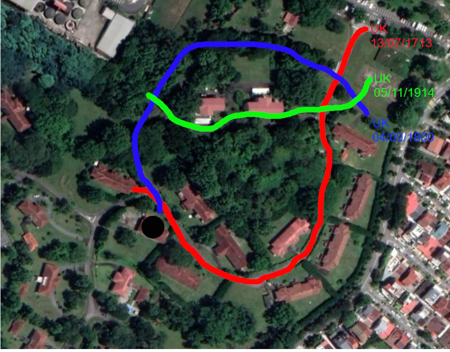

As you travel North, you recall your History lessons.
Singapore was once a British Crown Colony.
Besides Singapore, Britain (which was what the United Kingdom was once called) gained a lot of territories in the past.
Some of them are called Colonies, while others were called Protectorates.
Your teacher used to say that remembering important dates in history was crucial for the exams.
You can never...